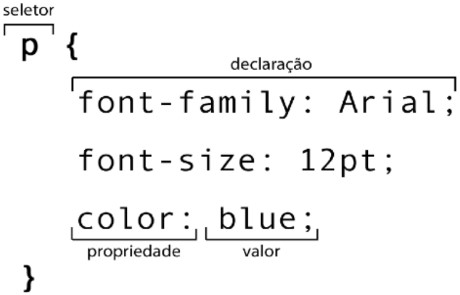
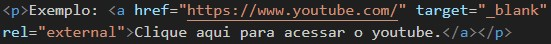

Meu processo estudando HTML5 e CSS3
Repositório público
github.com/gustavoguanabara
gustavoguanabara.github.com
Referências online
MDN, W3C, W3Schools etc.
HTML, CSS e JavaScript
HTML é uma linguagem de marcação focada em conteúdo (textos, imagens, vídeos, tabelas).
CSS é uma linguagem de marcação focada em design (cores, sombras, tamanhos, posicionamento).
JavaScript é uma linguagem de programação que trabalha as interações de um site.
Tags HTML
< > → Tag

Estilo em CSS
O CSS é usado para configurar um resultado visual dos elementos HTML. São realizadas através dos seletores.
Fonte → Arial.
Tamanho da fonte → 12pt (pontos).
Cor da letra → Azul.
OBS1: Em CSS é necessário colocar ponto e vírgula no final de cada comando.
OBS2: É necessário separar as propriedades do valor com dois pontos.
Estrutura básica HTML
Front-end → lado do cliente (HTML, CSS, JS).
Back-end → lado do servidor (PHP, JS, C#, Java).
Algumas tags
<head> → Configurações do site.
<body> → Conteúdo do site.
<h1> → Título.
<p> → Parágrafo.
<br> → Quebra de parágrafo (Break row)
<!--> → Comentário.
Símbolos e emojis
&(suf) → Símbolos (HTML Entities).
→←↑↓®
&#x → Emoji.
🤓🤑🤣🤳🤗🤐
Direitos autorais
É importante tomar cuidado com direitos autorais no momento de criar sites.
Sites para pegar conteúdo sem proteção por direitos autorais → Unsplash, Pexels.
Inserir imagens
<img src = " " alt = " "> → Carregar imagens.
src → source (Origem da imagem).
alt → alternative (Texto que explica a imagem).
Favicon
Favicon (Favorite icon) é o ícone que aparece na aba ao lado do título.
iconarchive → Site para pegar ícones prontos.
favicon.cc → Site para fazer ícones.
favicon.io → Site para converter ícones PNG em ico.
link:favicon → Adiciona o favicon.
Títulos
Níveis de títulos → <h1>, <h2>, <h3>, ... , <h6> (Hierarquia de títulos).
Negrito/Destaque
<b> → bold (Não semântica).
<strong> → termo mais forte (Semântica).
Itálico/Ênfase
<i> → (Não semântica).
<em> → (Semântica).
Envelopar
Seleciona a frase → ctrl + shift + p → Emmet: wrap with abbreviation → Enter abbreviation
Mais algumas tags
<mark> → Texto marcado.
<big> → Texto grande. (Obsoleto!!!)
<small> → Texto pequeno.
<del> → Texto excluído.
<ins> → Texto inserido. (Sublinhado como representação).
<u> → Texto sublinhado. (Não semântica).
<sup> → Texto normalTexto sobrescito. (22).
<sub> → Texto normalTexto sobrescito. (H2O).
<code> → Código fonte (Fonte monoespaçada).
<pre> →
Pré-formatação (Corrige tabulação).
<q> → quote
(Citação simples).
<blockquote> →
Citação completa.
<blockquote cite = "link"> →
Citação completa com link da fonte para acesso do desenvolvedor.
<abbr> → Abreviações. Brasil.
Listas
Listas ordenadas
<ol> → Ordered lists/Listas ordenadas. (Cria listas numeradas ou com letras).
<li> → List item/Itens da lista. (Deve estar entre <ol> </ol>).
- Acordar
- Café da manhã
- Faculdade
- Almoço
- Estudar
- Academia
- Jantar
- Dormir
Código da lista acima:
Usando o comando <ol type=" ">, podem ser ordenadas por números (1), letras maiúsculas (A), minúsculas(a), algarismos romanos maiúsculos(I) e minúsculos(i).
- Acordar
- Café da manhã
- Faculdade
- Almoço
- Estudar
- Academia
- Jantar
- Dormir
Código da lista acima:
Listas não ordenadas
<ul> → Unordered list/Lista não ordenada. (Listas que não são numeradas).
- Acordar
- Café da manhã
- Faculdade
- Almoço
- Estudar
- Academia
- Jantar
- Dormir
Código da lista acima:
Usando o comando <ul type=" ">, podemos mudar o símbolo antes de cada item. Sendo eles: círculo preto (disk), círculo aberto (circle) e quadrado (square).
- Acordar
- Café da manhã
- Faculdade
- Almoço
- Estudar
- Academia
- Jantar
- Dormir
Código da lista acima:
Adicionando outros níveis
Também é possível criar outros níveis de lista, misturando os tipos.
- Faça as somas:
- 2 + 2 =
- 3 + 4 =
- 7 + 3 =
- Faça as multiplicações:
- 2 x 2 =
- 3 x 4 =
- 7 x 3 =
- Faça as divisões e marque a alternativa correta:
- 2 / 2 = ?
- 3
- 6
- 2
- 1
- 4 / 2 = ?
- 3
- 6
- 2
- 4
Código da lista acima:
Listas de definição
São semelhantes a um dicionário. (Insere um termo e sua definição).
<dl> → Definition list/Lista de definição.
<dt> → Description text/Termo.
<dd> → Description definition/Descrição.
- Termo
- Descrição
- HTML
- Linguagem de marcação para a criação do conteúdo de um site.
- CSS
- Linguagem de marcação para a criação do design de um site.
- JavaScript
- Linguagem de programação para a criação de interatividade de um site.
Código da lista acima:
Links e Âncoras
SEO → Search Engine Optimization
Link Externo
<a> → Âncora
href=" " → Referência a hipertexto.
target="_blank" → Abre o link em uma nova aba.
rel="external" → Indica que leva para um link externo.
Exemplo: Clique aqui para acessar o youtube.
Link Interno
É um link que vai para outra página dentro do próprio site. É necessário criar outro arquivo HTML, e onde colocaria o link, insere o nome do arquivo e o caminho.
rel="next" → indica que o link leva para a próxima página do site.
rel="prev" → indica que o link leva para a página anterior do site.
target="_self" → indica que o link leva para uma página dentro do próprio site.
Exemplo: para aprender a criar um link de volta acesse a próxima página clicando no botão abaixo.

Links para download
Link para download por texto # → Usado para preencher a área de um link vazio.
type=" " → Media Types (usado para colocar o tipo do arquivo).
Para acessar a lista de media types clique aqui.
Exemplo: para baixar o PDF clique aqui.
Link para download por imagem.
Basta usar o mesmo código, porém acrescentando a tag img no lugar do texto.
Exemplo: clique na imagem abaixo para baixar o PDF.
Imagens
<picture> → Usada para inserir imagens que se adaptam de acordo com o navegador.
source:media:type → Seleciona o tamanho do navegador, a imagem equivalente e o tipo.
max-foto-p → 750px
max-foto-m → 1050px
Áudios
<audio> → Usada para inserir o áudio.
autoplay → Toca o áudio automaticamente ao abrir a página.
controls → Insere a aba de reprodução do áudio.
preload → Tipos de carregamentos.
loop → Recomeça o áudio automaticamente.
source:src → Colocar diferentes formatos de áudio.
É importante colocar diferentes opções de formato para o áudio, por ordem de preferência, caso o navegador do usuário não suporte algum formato, e também uma mensagem caso não suporte nenhum.
Vídeos
Vídeos Locais
<video> → Usada para inserir o vídeo.
width → Muda o tamanho do vídeo. (Apenas visualmente).
controls → Insere a aba de reprodução do vídeo
source:src → Colocar diferentes formatos de vídeo.
poster → Insere a capa do vídeo.
OBS: O "width" apenas muda o tamanho visualmente, mas o arquivo continua pesando o mesmo.
Vídeos Externos
Para inserir um vídeo externo de um site como o youtube ou vimeo, basta pegar o código HTML do vídeo na aba de compartilhar no próprio site.
Tipos de estilos CSS
Estilos Inline
O estilo é feito na mesma área do HTML (só é usado em casos muito específicos).
Exemplo:
Oi

Estilos CSS Internos
O estilo é feito separadamente dentro da tag <style> na área do <head>, com seletores separados.
Estilos CSS Externos
É formado igual o interno, porém o estilo serve para todas as páginas, criando um arquivo exclusivo apenas para o CSS.
link:css → Cria o arquivo para estilo (Pode ter mais de um).
@charset"UTF-8"; → Regra para acentuação.
Para ver o exemplo clique aqui
OBS: Os três estilos podem ser usados em um único projeto.
Cores
Representação por nomes
São representadas pelo nome em inglês: blue, white, yellow.
Representação por códigos hexadecimais
Decimal → 0, 1, 2, 3, 4, 5, 6, 7, 8, 9.
Hexadecimal → 0, 1, 2, 3, 4, 5, 6, 7, 8, 9, a, b, c, d, e, f.
São representadas pelo código equivalente.
Representação em RGB
RGB → Red, green, blue.

Representação em HSL
HSL → Hue, saturation, luminosity.
Circulo Cromático
Cores primárias → Amarelo, azul e vermelho.
Cores secundárias → Verde, laranja e violeta.
Cores terciárias → Misturas das primárias e secundárias.
Temperaturas de cores
Frias → Do amarelo-esverdeado ao violeta.
Quentes → Do amarelo ao vermelho-arroxeado.
Paleta de cores
As paletas de cores são conjuntos de cores pré-selecionadas utilizadas de forma harmônica, visando passar alguma ideia para quem visualiza, gerando assim a identidade visual de algo. Uma paleta vai ter de 3 a 5 cores.
Tipos de paletas
Cores complementares → São as com maior contraste entre si (opostas no círculo cromático).
Cores análogas → São as cores que não tem muito contraste, mas tem harmonia (vizinhas no círculo cromático).
Cores análogas e uma complementar → É uma paleta de 4 cores.
Cores análogas relacionadas → 2 cores vizinhas e uma pulando uma vizinha.
Cores intercaladas → Pula as vizinhas.
Cores triádicas → Pula de 3 em 3 vizinhas.
Cores em quadrado → Pula de 2 em 2 vizinhas.
Cores tetrádicas → 2 pares de cores complementares.
Monocromia → Trabalha com apenas 1 cor, mudando a saturação e o brilho.
Softwares para paletas de cores
Adobe colors → Site para criar paletas.
Paletton → Site para testar paleta na prática em protótipo.
Coolors → Sugestões de paletas.
Degradê
Código para criar o degradê.
{ * → Configuração global da CSS.
background-attachment:fixed → Fixa o fundo.
to bottom → Para baixo.
to top → Para cima
Alguns Conceitos
<main> → conteúdo principal em HTML
width: ; → Largura
text-align: justify; → Conserta o texto.
padding → Acolchoamento (a distância entre o elemento e as bordas da página).
margin:auto → Centraliza
border-radius → Arredonda as bordas.
box-shadow: 5px 5px 15px black; → Sombra.
Tipografia
É o estudo das formas de letras.
Anatomia do tipo
altura x → É a altura da letra x em uma fonte que vai definir a altura de todas as letras minúsculas.
altura das maiúsculas → É a altura de todas as letras maiúsculas.
altura ascendente → A altura dos vazamentos das alturas x e maíusculas (acima).
altura descendente → Altura dos vazamentos (abaixo).
altura do corpo → Altura total
font-family → Define o nome da fonte.
Medidas
Medidas absolutas → cm, mm, in, px, pt, pc.
Medidas relativas → em, ex, rem, vw, vh, %.
16px geralmente tem 1em.
font-size → Tamanho da fonte.
Mais alguns conceitos
font-weight → Peso da fonte.
font-style → Estilo da fonte (itálico).
text-decoration → Sublinhado
shorthand → Mãozinha
shorthand font → font: italic bolder 3 em 'work sans', sans serif;
Site para fontes online → Google Fonts
Site para baixar fontes → Dafont
@font-face → Regra para colocar fonte baixada.
format () → opentype(otf), truetype(ttf), embedded-opentype.
text-indent → Margem do parágrafo
ID em CSS
id=" " → Identifica componentes HTML específicos.
em HTML → id=" "
em CSS → #
Não usar mais de um id por documento.
Class
class=" " → Mesma função do id, porém pode usar múltiplas vezes.
em HTML → class
em CSS → .
OBS1: Não usar a forma como nome, e sim a funcionalidade.
<span> → Usa a classe em um trecho do texto.
OBS2: Pode usar mais de uma classe em um só elemento.
Pseudo-classe
Está relacionada ao estado de um elemento.
div:hover → Passar o mouse
div > p → Parágrafo dentro da div.
display: block; → Mostra o texto escondido.
a:visited → Site visitado
a:active → Enquanto clica no link.
# → id
. → class
: → pseudo-class
:: → pseudo-element
> → children